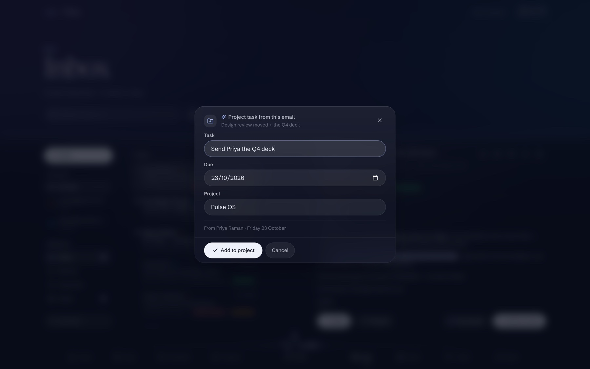
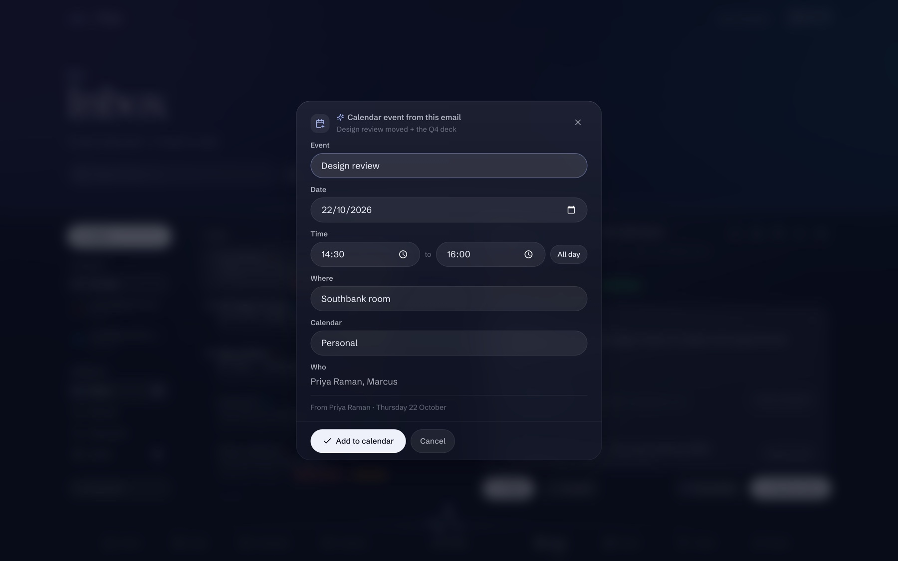
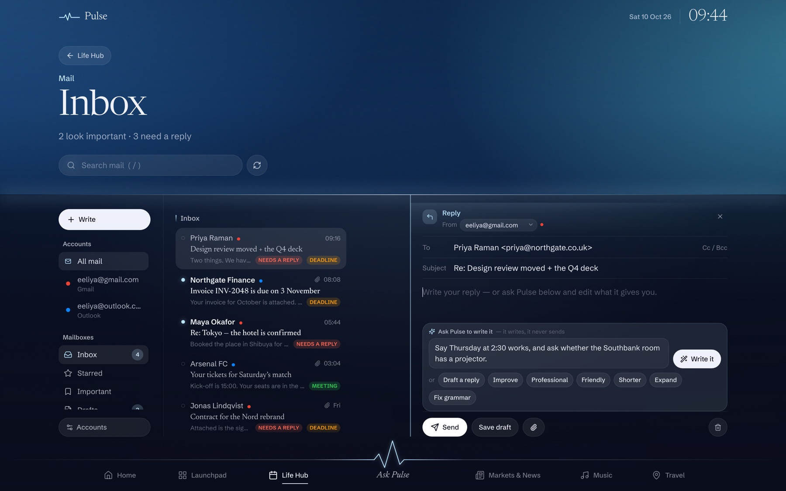
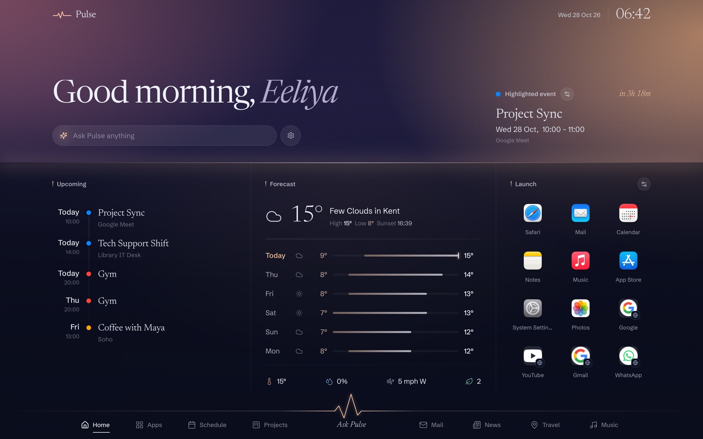
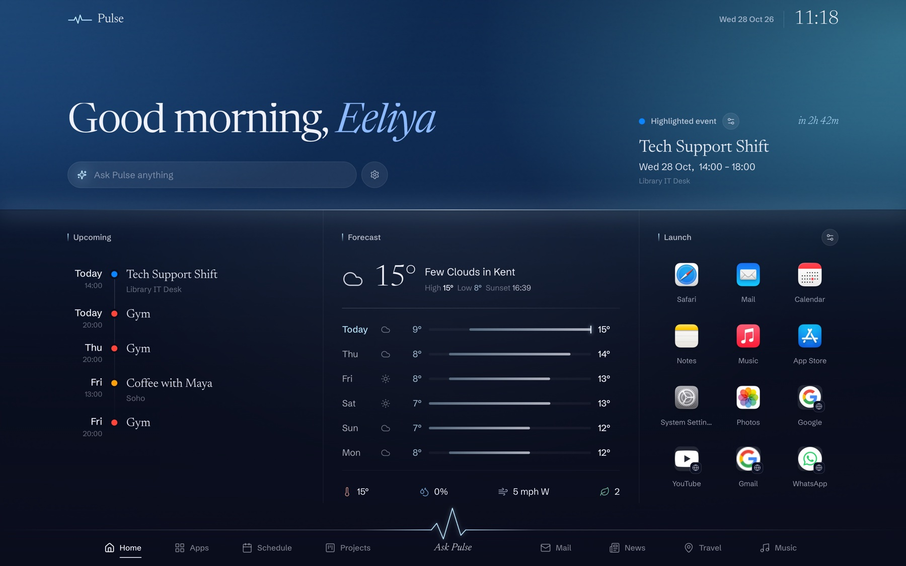
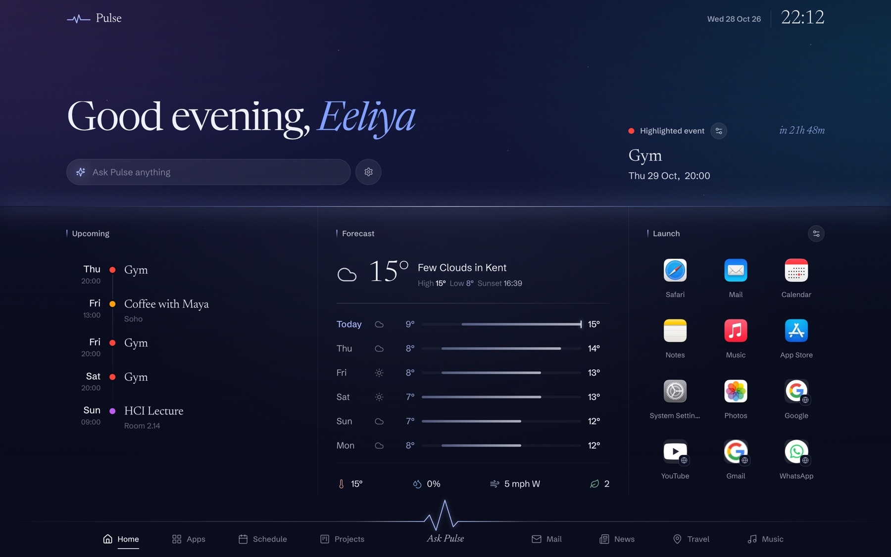

Every new part of Pulse, in full — what it does, how it was built, and where its limits are. Choose one; the short version of all of it is in the updates.
New17 October 2026 · Projects · Schedule · Mail · with a film, 2 min 12 s
Mail, Projects and Schedule, talking to each other.
Mail and Projects have tabs of their own now, and the calendar has been rebuilt around the month. None of that is the point by itself. The point is that they read each other: a meeting in an email arrives in your calendar, a line in one becomes a card on the right board, and Ask Pulse can tell you what is left on a project and move the card when it is done.
The board is what is in flight. Labels say what kind of work a card is, a due date goes amber on the day and red after it, and the ring says how much of the project is done before you have counted.
A board for every plan
Projects used to be a column of the Life Hub: a name, and a list of to-dos under it. It is a board now. Lists you name and reorder, cards you drag between them, and a last list that ticks a card off when it lands there — drag it back out and it un-ticks. A card holds what a card needs: labels, a start and a due date, a checklist with its own progress bar, notes, and a thread of notes to self.
One set of cards, drawn three ways because they answer three different questions. The board is what is in flight. The timeline is when it lands, with today marked and the undated cards counted at the foot rather than quietly left out. The table is the whole lot at once, sortable by any column, with each card’s list and dates editable where they stand.
The detail lives on the card. Labels, the dates, the notes, a checklist with its own progress and a thread of notes to self.The same cards, against time. Three months of shipped work as bars, today marked, and the undated cards counted at the foot.Every card at once. Any column sorts, and a card’s list or dates change where they stand.
It starts on Pulse OS’s own board
A new install does not open on an empty board. It opens on this project’s: three months of what shipped, dated as it shipped, from the first commit on 16 July to this week; what is being built now; what is up next; and a column of ideas for what could come after. It is the board doing what boards are for, which teaches the view better than four demonstration cards ever did. Projects you kept in the Life Hub come across as boards of their own, their to-dos as cards, and anything already there is left alone.
Ask Pulse, on the board
The assistant can read a board and work on it. Ask what is left on Pulse OS? and it reads the board before answering — what is in each list, when each card is due, and what is already late. Ask it to add a card and the card lands in the first list that is not the finishing one, unless you name another; tell it something is done and it moves the card into the last list, which ticks it off.
It is careful where it matters. A card that is already on the board is not added twice. A name that fits two cards, or two lists, moves nothing — it asks which you meant. And it cannot delete a card at all; that is yours to do, on the board.
Your mail, your plans, your days. Finally talking to each other.
From an email, onto a board
Highlight a line in a message and the menu now has Add to a project in it. Pulse writes the task in the imperative, quotes the words the email used for its date and works the date out in code — the same way as everywhere else in Mail — and picks the project it thinks the work belongs to. It all arrives in a review card you can change, and nothing is added until you press the button. The card that lands on the board carries a note saying which email it came from, so it can always be traced back.
Highlight a line. Explain it, summarise it, or turn just that into a task, today’s to-do, an event, a card on a project or a drafted reply.

Onto a board, with its date. “Could you get me the Q4 deck before end of day Friday” becomes Send Priya the Q4 deck, due Friday — each part of it yours to change first.
Ask Pulse writes it, when you ask
Writing with Pulse used to be a box open under every message, costing the draft a third of its height for something reached for on some emails and not most. It is a button now — Ask Pulse in the composer’s footer, or ⌘J — and a panel over the draft. Say what the email should say and Pulse writes it into the draft, then steps aside so you can edit. Or take what is already there and improve it, make it more professional or friendlier, shorten it, turn the gist into a proper email, or just fix the grammar. Send is still a button a person presses.
It writes into the draft. It never sends. Enter to run, Escape to close, and the panel is gone the moment the words are in.
Schedule, with room to breathe
What was left of the Life Hub is the day, so it is called Schedule now, and the calendar is the screen. A cell per day fills the height it is given, with events written into the days rather than counted under them — up to three a day at any laptop size, and the count beside the date always covering the rest. The days either side of the month stay in view, quieter, their events in a greyer shade of each calendar’s colour. The keyboard walks it: arrows by the day, Page Up and Page Down by the month, Home and End to its first and last day, and T back to today.
Beside it, the day. What is over steps back, what is on now is lit in its own calendar’s colour, and the line under the date says it in a sentence — 3 events · 2 to-dos · On now: Gym.
And to-dos get a frequency, chosen on the line you type them on: once, daily, weekly, monthly or yearly — or until done, which carries a to-do forward day after day until it is ticked, then leaves it on the day it was finished. A repeat is ticked off one day at a time, so Monday’s bins say nothing about next Monday’s, and Ask Pulse asks the same question of a day. Habits have gone from Schedule; they were not earning their place.
The month at the size of a month. Gym is on now, so it is lit; the day’s two earlier events have stepped back; and the first week of November is there at the foot, quieter, rather than missing.
How they talk to each other
Mail to Schedule. A meeting found in an email becomes an event in Google, iCloud or Pulse’s own calendar, and is on the month the moment you add it.
Mail to Projects. A line becomes a card on the board it belongs to, with its due date and the email it came from.
Mail to your to-dos. A request becomes a task on the day it is due.
Ask Pulse, across all of it. It reads the board, the calendar and the to-do list, and changes them when you ask — typed, or out loud in voice mode.
Fixed along the way
An old event could take the calendar down. An iCalendar property with a parameter on it — a language tag on a title, say — comes out of the parser as an object rather than text, and the view cannot draw an object. Older events carry more of them, which is why it showed up on paging back through the months. The text is unwrapped where the feed is read now, and the calendar checks what it is given before drawing it.
Website icons could go blank for a day. A site that refused to be read once — a 403 meant for robots, a slow reply — was remembered as having no icon until tomorrow. A poor answer is kept for five minutes now, and icons are ranked by the size they really are rather than the size a page claims.
The composer’s head no longer draws a bright bar under the horizon at dusk.
The film
Two minutes and twelve seconds, in the launch film’s style and built the same way: every frame is code — Pulse’s own views rebuilt in Remotion from its components rather than recorded off a screen — with two voices, a narrator and Pulse itself, generated with Google’s Gemini and cut to the word on a ninety-beat grid. It opens on the same line and the same five words, connects Gmail and Outlook with their own logos, fills a board and asks it a question, and ends with the three sections folding into the mark.
New9 October 2026 · Gmail · Outlook · Microsoft 365
Your inbox, in Pulse.
Gmail and Outlook now connect to Pulse OS. Not as another mail client bolted on the side — as a part of your day the rest of Pulse can read. An email that mentions Thursday at half two becomes something in your calendar. One that asks for the Q4 deck by Friday becomes a task with the right date on it. You see both before either happens.
Two accounts, one inbox. Gmail’s categories are in the sidebar because this Gmail account has them. The Outlook account below it does not, so they are not offered for it.
Two services, one way of working
Gmail speaks in labels. Outlook speaks in folders. Gmail has an Important flag and four inbox categories; Outlook has neither. Most apps that support both show you the lowest common denominator, or worse, four empty tabs on the account that has never heard of them.
Pulse does it the other way round. There is one internal idea of a mailbox — inbox, starred, important, drafts, sent, archive, spam, bin — and each service declares what it can actually do. Gmail’s categories appear for a Gmail account and are simply absent for an Outlook one. Gmail has no Archive label, so archiving is a search; Outlook has no Starred folder, so starred is a flag. You never see either of those details.
Connect both and the inbox interleaves by date, each message carrying its own account. If one stops answering it says so, rather than quietly showing you a smaller number.
It reads the email so you don’t have to twice
Open a message and there is a button marked Dates & tasks. One press and Pulse reads the whole thing once and hands back what is in it: the meetings, the things you have been asked to do, the dates to know about, who is involved, and whether it needs a reply at all. Each arrives as a row with the button that acts on it — the meeting has Add to calendar beside it, the task has Add to to-do.
An earlier version answered the same question in a paragraph. It was accurate, and it was useless: you cannot add a paragraph to a calendar.
Everything in one press. A meeting, two things to do, a date to be aware of and who is involved. Each date carries the words it was read from — from “end of day Friday” — so a misreading is visible without opening the email again.
The dates are worked out in code, not guessed.
This is where this sort of feature usually fails quietly. Ask a language model for the calendar date of “Thursday’s design review” and it answers confidently, often wrongly, and differently if you ask again. In testing it put a Thursday meeting on the Wednesday once and eight days out the next time — both with high confidence.
So Pulse does not ask. The model only quotes the words the email itself used — “Thursday”, “end of day Friday”, “3 November” — which is reading, not arithmetic. The calendar is then worked out in ordinary tested code, against the day the email was sent, so a Tuesday email saying “Thursday” means that Thursday however long ago you got it.
Both are shown together: Thursday 9 October · from “end of day Friday”. That is not decoration. It is the only way to tell a misread date from a correct one without opening the email again.
A line in an email, into your day
Highlight any text in a message and Pulse offers to explain it, summarise it, turn it into a task, put it on today’s list, file it against one of your projects, add it to your calendar, or draft a reply about it.
Everything that would change something opens a review card first, with every field editable and the model’s own uncertainty said out loud — I think there’s an event here, but the time is only implied. Nothing is written until you press the button on that card. And it uses the lists you already have: a task made from an email is an ordinary Pulse task, on the same projects as everything else.

Nothing is written until you press the button. Every field editable, the calendar yours to pick, and the model’s own uncertainty shown where it has any.

Say what it should say. The composer takes the reading column, lit down its edge. Pulse fills the box; Send is still a button a person presses.
Writing, with the words taken care of
The composer sits in the same column you were reading in — a reply belongs beside the thing it is replying to — with an accent rule down the edge so you always know which of the two you are in. Tell Pulse what the email should say: say yes to Thursday, ask whether the room has a projector. It writes it; you edit it. Where only you can supply something, it leaves a gap in square brackets rather than deciding for you.
What it will never do
It never sends. Send is a button, pressed by a person. The assistant can fill the box and has no way to press it.
It never deletes, archives or files anything on its own.
It cannot permanently delete mail at all — not by policy, but because the permission is never requested.
Your password never reaches Pulse. You sign in with Google or Microsoft; only the resulting token is kept, on your own machine, where no page in the browser can read it.
Message bodies are never written to disk, and are left out of exported backups on purpose.
The assistant is never handed your mailbox — one message, one thread or one search, each with a hard ceiling.
Nothing is read by a model unless you ask. The unread count and the “8 look important” line are worked out by ordinary rules on your machine.
Film7 October 2026 · 2 min 29 s, narrated · plus a 30-second ad
Pulse OS has a film.
Two and a half minutes covering every part of the app — and every frame of it is code: Pulse’s own views, rebuilt from its components and cut to a score composed for them. With it came a thirty-second ad, made for phones.
The launch film, October 2026. Retired: the app has moved a long way since, and the tour covers every part of it as it stands. Both films are kept in the repository’s history rather than on the site.
Every frame is code
Both films are built in Remotion from Pulse’s own views, rebuilt from its components rather than recorded off a screen — so every frame is sharp at any size, and every number on screen is the one the story needs rather than whatever the API happened to return that afternoon.
Cut to the word
Two voices — a narrator, and Pulse itself — generated with Google’s Gemini, each line read three times and the best take chosen blind. whisper.cpp timed every word, and the picture moves on the words, on a ninety-beat-a-minute grid with a score composed in code.
Cut to the bar
The ad has no voice at all. It runs at 124 beats a minute, edited on the bars of “Rising Forest” by Diego Nava, with forty-five sound effects set on the beats.
The whole frontend rebuilt around one spatial system, with a background that follows the time of day. Travel went live, and the assistant learned to speak.
The sky is the hour. Dawn, day, dusk and night each light the whole screen differently and crossfade as the day turns.
A sky, a horizon, and a ground
Every view is composed of the same three parts: a sky holding what the view is about, set large and straight on the light with no box around it; a horizon at a fixed height, so the line falls in the same place as you move between tabs; and a full-bleed ground divided into columns by space and a faint rule rather than chopped into floating cards. Only real objects — a record sleeve, a video, a map, an app icon — get a tile of their own.
The light follows the hour
The background is not a picture of a sky, it is the hour itself: dawn, day, dusk and night each light the whole screen differently, crossfading as the day turns. Music lends the screen the colours of whatever record is playing.

Dawn.

Day.

Night.
A type system, not a font choice
Newsreader for display and figures, Schibsted Grotesk for everything else, on one scale used everywhere instead of sizes picked per view. Colour carries the hierarchy: accent-tinted eyebrows, bright titles, dim meta.
Travel is live, and Pulse can hear you
Flights tracked from community ADS‑B receivers, real exchange rates with a month of history, and maps that need no key. And a voice mode on the Gemini Live API that shares every one of the typed assistant’s tools — so anything you can ask for, you can say.
Thirteen photographs, from Wikimedia Commons, under the licences shown: Emirates Stadium, Ed g2s, CC BY-SA 3.0; Everbank Stadium 2024, Excel23, CC BY 4.0; Japan Airlines A350-1041, S5A-0043, CC BY 4.0; Tokyo Tower at dusk, Foooomio, CC BY 3.0; London Thames sunset panorama, Diliff, CC BY 3.0; Shibuya crossing, Syced, CC0; Liverpool Street at rush hour, Roger Carvell, CC BY 3.0; Bicycle commuters, Roger Carvell, CC BY 3.0; Eiffel Tower at sunset, Pedro Kümmel, CC0; Travers Solar Farm, Kkiefuik, CC BY 4.0; Sydney Harbour Bridge at night, sander88, CC BY 2.0; New York skyline at night, Azeusss, CC BY 4.0; Trams in Lisbon, Heather Cowper, CC BY 2.0.
Sound and voice
The launch film’s and the update film’s scores were composed for them in code. The ad’s music is “Rising Forest” by Diego Nava; its sound effects, and a handful in the update film, are from Mixkit, under the Mixkit free licences. The narration in every film is AI-generated with Google Gemini — Charon and Puck on the launch and update films, Sulafat and Puck on the tour — and carries Google’s SynthID watermark.
Trademarks
The Gmail, Outlook, Google Calendar, iCloud, Spotify and Gemini marks, and the club and league crests, belong to their owners and appear here only to show what Pulse connects to. No endorsement is implied, and Pulse OS is not affiliated with any of them.